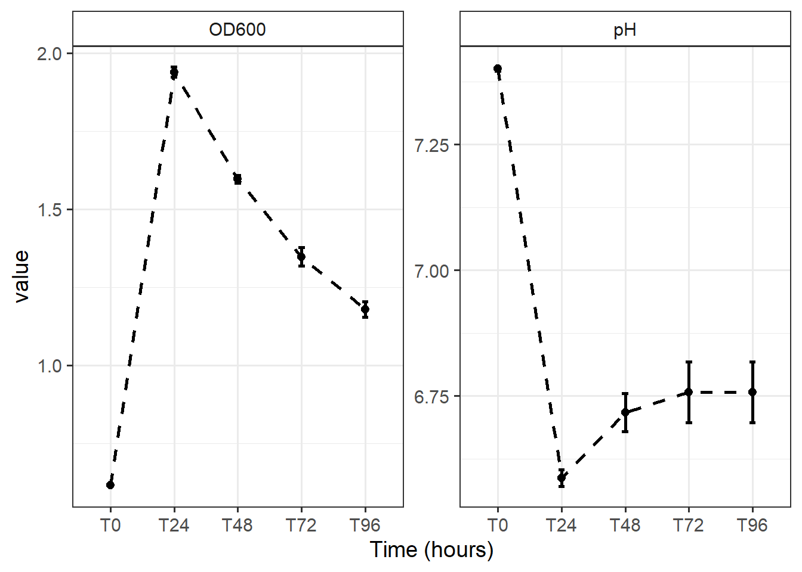

Last updated: 2021-04-04
Checks: 7 0
Knit directory: DbMM/
This reproducible R Markdown analysis was created with workflowr (version 1.6.2). The Checks tab describes the reproducibility checks that were applied when the results were created. The Past versions tab lists the development history.
Great! Since the R Markdown file has been committed to the Git repository, you know the exact version of the code that produced these results.
Great job! The global environment was empty. Objects defined in the global environment can affect the analysis in your R Markdown file in unknown ways. For reproduciblity it’s best to always run the code in an empty environment.
The command set.seed(20210404) was run prior to running the code in the R Markdown file. Setting a seed ensures that any results that rely on randomness, e.g. subsampling or permutations, are reproducible.
Great job! Recording the operating system, R version, and package versions is critical for reproducibility.
Nice! There were no cached chunks for this analysis, so you can be confident that you successfully produced the results during this run.
Great job! Using relative paths to the files within your workflowr project makes it easier to run your code on other machines.
Great! You are using Git for version control. Tracking code development and connecting the code version to the results is critical for reproducibility.
Note that you need to be careful to ensure that all relevant files for the analysis have been committed to Git prior to generating the results (you can use wflow_publish or wflow_git_commit). workflowr only checks the R Markdown file, but you know if there are other scripts or data files that it depends on. Below is the status of the Git repository when the results were generated:
Ignored files:
Ignored: .Rhistory
Ignored: .Rproj.user/
Untracked files:
Untracked: .Rprofile
Untracked: .gitattributes
Untracked: .gitignore
Untracked: DbMM.Rproj
Untracked: Ocucpancy_relationship.csv
Untracked: README.md
Untracked: _workflowr.yml
Untracked: analysis/
Untracked: bin/
Untracked: code/
Untracked: data/
Untracked: data_raw/
Untracked: output/
Untracked: structure.Rmd
Note that any generated files, e.g. HTML, png, CSS, etc., are not included in this status report because it is ok for generated content to have uncommitted changes.
There are no past versions. Publish this analysis with wflow_publish() to start tracking its development.
This document consist of codes for analysis and visualization of lab data from growth assays, hplc measurement of individual and mixed cultures of Db-MM.
library(tidyverse)
library(ggplot2)
library(ggpubr)
library(microbiome)
library(patchwork)# for metabolites tested in the Db-MM
ColorsDT <- c(Acetate = "#CBD588", Propionate = "#5F7FC7",
Butyrate = "orange", Isobutyrate= "#DA5724",
Formate ="#508578", Lactate = "#CD9BCD", Glucose = "#AD6F3B",
Fructose = "#673770",Xylose = "#D14285", Cellobiose= "black",
Hydrogen_gas="#a8ddb5", Hydrogen = "#08306b")# Define a color for each strain used in the Db-MM
strain.colors <- c(`Bacteroides ovatus` = "#1F78B4",
`Bacteroides xylanisolvens` = "#B2DF8A",
`Anaerobutyricum soehngenii` = "#FDBF6F",
`Agathobacter rectalis`= "#33A02C",
`Eubacterium siraeum` ="#FB9A99",
`Faecalibacterium prausnitzii` = "#A6CEE3",
`Lachnospiraceae bacterium 7_1_58FAA` = "#E31A1C",
`Roseburia intestinalis` = "#CAB2D6",
`Subdoligranulum variabile` = "#FF7F00",
`Coprococcus catus` = "#6A3D9A")hplc_data <- read.csv("data_raw/02_wetlab/mono_culture_hplc.csv",
row.names = 1, header = T,
stringsAsFactors = F)head(hplc_data) Acetate Butyrate Formate Isobutyrate Lactate Propionate Cellobiose
AR1_T0 30.11726 0.00000 1.206121 0 1.455783 2.601330 3.20219308
AR1_T24 23.77700 10.70711 3.853933 0 8.762623 2.614102 0.00000000
AR1_T48 19.48016 16.71753 4.615672 0 9.403466 2.730518 0.02172084
AR1_T72 16.04424 16.51905 4.130300 0 8.454673 2.295613 0.00000000
AR1_T96 17.85162 16.86376 4.233168 0 8.834176 2.513840 0.00000000
AR1_T168 19.02426 19.02116 4.725509 0 3.517638 2.730241 0.02519703
Fructose Glucose Xylose BacterialStrain Replicate
AR1_T0 0.000000 0.79201078 0.8575194 Agathobacter rectalis AR1
AR1_T24 0.000000 0.03352015 1.1633253 Agathobacter rectalis AR1
AR1_T48 1.533384 0.08279036 0.0000000 Agathobacter rectalis AR1
AR1_T72 1.415372 0.07678967 0.0000000 Agathobacter rectalis AR1
AR1_T96 1.509630 0.09062684 0.0000000 Agathobacter rectalis AR1
AR1_T168 1.584211 0.10178697 0.0000000 Agathobacter rectalis AR1
Timepoint
AR1_T0 T0
AR1_T24 T24
AR1_T48 T48
AR1_T72 T72
AR1_T96 T96
AR1_T168 T168all2 <- reshape2::melt(hplc_data)Using BacterialStrain, Replicate, Timepoint as id variablesall2 <- subset(all2, variable != "Isobutyrate") # below detection limit## Since acetate was added in the media and had high concentration, I will plot it seperately
all2.acetate <- subset(all2, variable == "Acetate")
all2.acetate$TimepointNum <- all2.acetate$Timepoint
all2.acetate$TimepointNum <- as.numeric(gsub("T", "",all2.acetate$TimepointNum))
p.ace <- ggline(all2.acetate, "TimepointNum", "value", color = "BacterialStrain",
add = "mean_se",
ylab = "Acetate concentration (mM)",
xlab = "Time (hr)",
legend = "right", size = 1,
ncol =5) + rotate_x_text() + scale_color_manual("Legend:", values= strain.colors)
p.ace <- p.ace + theme_bw(base_size = 12) + theme(
strip.background = element_rect(fill="white"))
p.ace <- ggpar(p.ace, legend = "right", font.legend = c(10, "italic"))
p.aceggsave("data/02_wetlab/figs/01_mono_culture_HPLC_Acetate.pdf", height = 5, width = 10)all2.noace <- subset(all2, variable !="Acetate")
all2.noace$TimepointNum <- all2.noace$Timepoint
all2.noace$TimepointNum <- as.numeric(gsub("T", "",all2.noace$TimepointNum))
#head(hplc_metadata)
p1 <- ggline(all2.noace, "TimepointNum", "value", color = "variable",
add = "mean_se",
facet.by = "BacterialStrain",
ylab = "Concentration (mM)",
xlab = "Time (hr)",
legend = "right", #scales ="free",
ncol = 5,
size = 1) + rotate_x_text() + scale_color_manual("Legend:", values= ColorsDT)
p1 <- p1 + theme_bw(base_size = 12) + theme(strip.background = element_rect(fill="white")) + theme(strip.text = element_text(face = "italic"))
p1 <- p1 + geom_hline(aes(yintercept=4), linetype="dashed", alpha = 0.5)
p1 #dir.create("results")
ggsave("data/02_wetlab/figs/01_mono_culture_HPLC_metabolites.pdf", height = 5, width = 14)
#ggsave("output/figs/01_mono_culture_HPLC_metabolites.png", height = 5, width = 14)
#ggsave("output/figs/01_mono_culture_HPLC_metabolites.tiff", height = 5, width = 14)p1 / (p.ace + plot_spacer() +plot_spacer()) + plot_layout(heights = c(2,1)) + plot_annotation(tag_levels = "A") #+ plot_layout(guides = 'collect')ggsave("data/02_wetlab/figs/Edit_01_mono_cultue_HPLC_metabolites.pdf", height = 9, width = 16)mixed_data <- read.csv("data_raw/02_wetlab/mixed_culture_scfa_gc.csv",
row.names = 1, header = T,
stringsAsFactors = F)
#mixed_data_sub <- mixed_data[, -c(2, 4, 5, 6 )]
mixed_data_2 <- reshape2::melt(mixed_data)Using Rep, Timepoint as id variables#mixed_data_2 <- subset(mixed_data_2, CarbonSource != "Cellobiose-Xylan-Starch-Inulin")
mixed_data_2$TimepointNum <- mixed_data_2$Timepoint
mixed_data_2$TimepointNum <- as.numeric(gsub("T", "",mixed_data_2$TimepointNum))
p4 <- ggline(mixed_data_2, "TimepointNum", "value", color = "variable",
add = "mean_se",
ylab = "Concentration (mM)",
xlab = "Time (hr)", legend = "right",
size = 1.5) + rotate_x_text() + scale_color_manual("Legend", values= ColorsDT)
p4 <- p4 + geom_vline(aes(xintercept=1.5), linetype="dashed", alpha = 0.5) + geom_vline(aes(xintercept=2.5), linetype="dashed", alpha = 0.7)
p4 <- p4 + theme_bw(base_size = 14)
p4ggsave("data/02_wetlab/figs/01_Figure_Mixed_HPLC.pdf", height = 3, width = 6)
ggsave("data/02_wetlab/figs/01_Figure_Mixed_HPLC.png", height = 3, width = 6)
ggsave("data/02_wetlab/figs/01_Figure_Mixed_HPLC.tiff", height = 3, width = 6)Optical density and pH
od_metadata <- read.csv("data_raw/02_wetlab/mixed_culture_od_ph.csv",
row.names = 1, header = T,
stringsAsFactors = F)# convert to long format
all.OD2 <- reshape2::melt(od_metadata)Using Timepoint, CarbonSource as id variablesall.OD2 <- subset(all.OD2, variable !="Replicate")
# create a line plot
p.od <- ggline(all.OD2, "Timepoint", "value",
facet.by = "variable",
add = "mean_se",
xlab = "Time (hours)",
size = 1, scales = "free", linetype = "dashed") + rotate_x_text()
p.od <- p.od + theme_bw(base_size = 14) + theme(strip.background = element_rect(fill="white"))
p.od 
ggsave("data/02_wetlab/figs/01_mixed_culture_OD_PH_figure.pdf", height = 3, width = 6)
ggsave("data/02_wetlab/figs/01_mixed_culture_OD_PH_figure.png", height = 3, width = 6)
ggsave("data/02_wetlab/figs/01_mixed_culture_OD_PH_figure.tiff", height = 3, width = 6)# pH
ph_data <- read.csv("data_raw/02_wetlab/mono_culture_od_ph.csv",
row.names = 1, header = T,
stringsAsFactors = F)
all.ph2 <- reshape2::melt(ph_data)Using Replicate, Timepoint, BacterialStrain as id variables#scale_ph <- scale_y_continuous(breaks = c(2, 4, 6, 8, 9), labels = c("2", "4", "6", "8", "9"))
#scale_ph <- scale_y_continuous(limits=c(5, 9))
p.ph <- ggline(all.ph2, "Timepoint","value", color = "BacterialStrain",
facet.by = c("variable"),
add = "mean_se",
ylab = "Value",
xlab = "Time (hours)", legend = "right",
tickslab = T,
scales = "free") + rotate_x_text() + scale_color_manual("Bacterial strain", values= strain.colors) + theme_classic2(base_size = 14)
p.ph ggsave("data/02_wetlab/figs/01_mono_culture_OD_PH.pdf", height = 4, width = 10)
ggsave("data/02_wetlab/figs/01_mono_culture_OD_PH.tiff", height = 4, width = 10)sessionInfo()R version 4.0.3 (2020-10-10)
Platform: x86_64-w64-mingw32/x64 (64-bit)
Running under: Windows 10 x64 (build 19042)
Matrix products: default
locale:
[1] LC_COLLATE=English_Netherlands.1252 LC_CTYPE=English_Netherlands.1252
[3] LC_MONETARY=English_Netherlands.1252 LC_NUMERIC=C
[5] LC_TIME=English_Netherlands.1252
attached base packages:
[1] stats graphics grDevices utils datasets methods base
other attached packages:
[1] patchwork_1.0.1 microbiome_1.11.2 phyloseq_1.33.0 ggpubr_0.4.0
[5] forcats_0.5.0 stringr_1.4.0 dplyr_1.0.2 purrr_0.3.4
[9] readr_1.4.0 tidyr_1.1.2 tibble_3.0.4 ggplot2_3.3.2
[13] tidyverse_1.3.0 workflowr_1.6.2
loaded via a namespace (and not attached):
[1] Rtsne_0.15 colorspace_1.4-1 ggsignif_0.6.0
[4] ellipsis_0.3.1 rio_0.5.16 rprojroot_1.3-2
[7] XVector_0.30.0 fs_1.5.0 rstudioapi_0.11
[10] farver_2.0.3 fansi_0.4.1 lubridate_1.7.9
[13] xml2_1.3.2 codetools_0.2-16 splines_4.0.3
[16] knitr_1.30 ade4_1.7-15 jsonlite_1.7.1
[19] broom_0.7.1 cluster_2.1.0 dbplyr_1.4.4
[22] compiler_4.0.3 httr_1.4.2 backports_1.2.0
[25] assertthat_0.2.1 Matrix_1.2-18 cli_2.1.0
[28] later_1.1.0.1 htmltools_0.5.1.1 tools_4.0.3
[31] igraph_1.2.6 gtable_0.3.0 glue_1.4.2
[34] reshape2_1.4.4 Rcpp_1.0.5 carData_3.0-4
[37] Biobase_2.50.0 cellranger_1.1.0 vctrs_0.3.4
[40] Biostrings_2.58.0 rhdf5filters_1.2.0 multtest_2.45.0
[43] ape_5.4-1 nlme_3.1-149 iterators_1.0.13
[46] xfun_0.17 ps_1.4.0 openxlsx_4.2.2
[49] rvest_0.3.6 lifecycle_0.2.0 rstatix_0.6.0
[52] zlibbioc_1.36.0 MASS_7.3-53 scales_1.1.1
[55] hms_0.5.3 promises_1.1.1 parallel_4.0.3
[58] biomformat_1.17.0 rhdf5_2.34.0 yaml_2.2.1
[61] curl_4.3 stringi_1.5.3 S4Vectors_0.28.0
[64] foreach_1.5.1 permute_0.9-5 BiocGenerics_0.36.0
[67] zip_2.1.1 rlang_0.4.8 pkgconfig_2.0.3
[70] evaluate_0.14 lattice_0.20-41 Rhdf5lib_1.12.0
[73] labeling_0.4.2 tidyselect_1.1.0 plyr_1.8.6
[76] magrittr_1.5 R6_2.5.0 IRanges_2.24.0
[79] generics_0.1.0 DBI_1.1.0 pillar_1.4.6
[82] haven_2.3.1 foreign_0.8-80 withr_2.3.0
[85] mgcv_1.8-33 survival_3.2-7 abind_1.4-5
[88] modelr_0.1.8 crayon_1.3.4 car_3.0-10
[91] rmarkdown_2.4 grid_4.0.3 readxl_1.3.1
[94] data.table_1.13.0 blob_1.2.1 git2r_0.27.1
[97] vegan_2.5-6 reprex_0.3.0 digest_0.6.27
[100] httpuv_1.5.4 stats4_4.0.3 munsell_0.5.0
sessionInfo()R version 4.0.3 (2020-10-10)
Platform: x86_64-w64-mingw32/x64 (64-bit)
Running under: Windows 10 x64 (build 19042)
Matrix products: default
locale:
[1] LC_COLLATE=English_Netherlands.1252 LC_CTYPE=English_Netherlands.1252
[3] LC_MONETARY=English_Netherlands.1252 LC_NUMERIC=C
[5] LC_TIME=English_Netherlands.1252
attached base packages:
[1] stats graphics grDevices utils datasets methods base
other attached packages:
[1] patchwork_1.0.1 microbiome_1.11.2 phyloseq_1.33.0 ggpubr_0.4.0
[5] forcats_0.5.0 stringr_1.4.0 dplyr_1.0.2 purrr_0.3.4
[9] readr_1.4.0 tidyr_1.1.2 tibble_3.0.4 ggplot2_3.3.2
[13] tidyverse_1.3.0 workflowr_1.6.2
loaded via a namespace (and not attached):
[1] Rtsne_0.15 colorspace_1.4-1 ggsignif_0.6.0
[4] ellipsis_0.3.1 rio_0.5.16 rprojroot_1.3-2
[7] XVector_0.30.0 fs_1.5.0 rstudioapi_0.11
[10] farver_2.0.3 fansi_0.4.1 lubridate_1.7.9
[13] xml2_1.3.2 codetools_0.2-16 splines_4.0.3
[16] knitr_1.30 ade4_1.7-15 jsonlite_1.7.1
[19] broom_0.7.1 cluster_2.1.0 dbplyr_1.4.4
[22] compiler_4.0.3 httr_1.4.2 backports_1.2.0
[25] assertthat_0.2.1 Matrix_1.2-18 cli_2.1.0
[28] later_1.1.0.1 htmltools_0.5.1.1 tools_4.0.3
[31] igraph_1.2.6 gtable_0.3.0 glue_1.4.2
[34] reshape2_1.4.4 Rcpp_1.0.5 carData_3.0-4
[37] Biobase_2.50.0 cellranger_1.1.0 vctrs_0.3.4
[40] Biostrings_2.58.0 rhdf5filters_1.2.0 multtest_2.45.0
[43] ape_5.4-1 nlme_3.1-149 iterators_1.0.13
[46] xfun_0.17 ps_1.4.0 openxlsx_4.2.2
[49] rvest_0.3.6 lifecycle_0.2.0 rstatix_0.6.0
[52] zlibbioc_1.36.0 MASS_7.3-53 scales_1.1.1
[55] hms_0.5.3 promises_1.1.1 parallel_4.0.3
[58] biomformat_1.17.0 rhdf5_2.34.0 yaml_2.2.1
[61] curl_4.3 stringi_1.5.3 S4Vectors_0.28.0
[64] foreach_1.5.1 permute_0.9-5 BiocGenerics_0.36.0
[67] zip_2.1.1 rlang_0.4.8 pkgconfig_2.0.3
[70] evaluate_0.14 lattice_0.20-41 Rhdf5lib_1.12.0
[73] labeling_0.4.2 tidyselect_1.1.0 plyr_1.8.6
[76] magrittr_1.5 R6_2.5.0 IRanges_2.24.0
[79] generics_0.1.0 DBI_1.1.0 pillar_1.4.6
[82] haven_2.3.1 foreign_0.8-80 withr_2.3.0
[85] mgcv_1.8-33 survival_3.2-7 abind_1.4-5
[88] modelr_0.1.8 crayon_1.3.4 car_3.0-10
[91] rmarkdown_2.4 grid_4.0.3 readxl_1.3.1
[94] data.table_1.13.0 blob_1.2.1 git2r_0.27.1
[97] vegan_2.5-6 reprex_0.3.0 digest_0.6.27
[100] httpuv_1.5.4 stats4_4.0.3 munsell_0.5.0